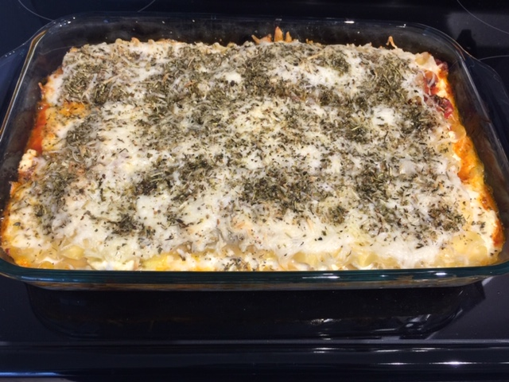

Better Than a Beef Lasagna, I Promise
Vegetable Lasagna (⏰: 2-3 Hours)
← Back to Recipe Index 🍽

Ingredients:
- 1/4 Cup Extra Virgin Olive Oil
- 1 Small/Medium Red Pepper
- 1 Small/Medium Carrot
- 1 Small Onion
- 3 Roma Tomatoes
- 3/4 Cup White Mushrooms
- 1 Small Zucchini
- 3 Cloves of Minced Garlic
- 12 Ounces Tomato Paste
- 1 Cup Chicken Broth
- 2 Tbsp Brown Sugar
- 2 Tsp Oregano
- 2 Tsp Basil
- 1 Tsp Salt
- 1/2 Tsp Thyme
- 1/4 Tsp Pepper
- 9 Lasagna Noodles
- 2 Medium/Large Eggs
- 2 Cups Light Ricotta Cheese
- 1 Cup Mozzarella Cheese
- 1/3 Cup Parmesan Cheese
- 2 Tsp Italian Seasoning
Preparation:
- Wash and Julienne (Cut into Long Strips) the Red Pepper
- Peel, Wash, and Shred the Carrot with a Cheese Grater
- Dice the Onion
- Set the Pepper, Carrot, and Onion Aside
- Wash and Slice the Tomatoes into Small Half Slices
- Wash and Slice the Mushrooms
- Wash, Remove Ends, and Slice the Zucchini into Thick Slices, Cut Slices in Half
- Set Tomatoes, Mushrooms, and Zucchini Aside
- In a Small Bowl Mix the Brown Sugar, Oregano, Basil, Salt, Thyme, Pepper and Set Aside
- Grate the Mozzarella Cheese and Parmesan Cheese and Combine, Set Aside
- In a Small Bowl, Add Eggs and Lightly Beat
- Add Ricotta Cheese to the Eggs and Combine, Set Aside
Directions:
- In large pot, heat olive oil over medium-high heat (1-2 minutes)
- Add red pepper, carrot, and onion. Cook and stir periodically until crisp-tender. (5-10 minutes)
- Add tomatoes, mushrooms, zucchini, and minced garlic. Cook and stir periodically until zucchini is crisp-tender. (7-15 minutes)
- Add tomato paste, broth, and spice mixture. Bring to a boil.
- Once the mixture reaches a boil, reduce temperature to low/simmer and cook for 30 minutes, uncovered. Stir occasionally.
- Preheat oven to 350°F. Cook lasagna noodles according to package directions and set aside.
- In a large, glass baking dish, construct the lasagna layers as follows:
- 1/3 of the Vegetable Mixture
- 3 Lasagna Noodles
- 1/2 of the Ricotta Cheese Mixture
- 1/3 of the Vegetable Mixture
- 3 Lasagna Noodles
- 1/2 of the Ricotta Cheese Mixture
- 1/3 of the Vegetable Mixture
- 3 Lasagne Noodles
- All the Mozzarella and Parmesan Cheese
- The Italian Seasoning
- Bake for 30-35 minutes, uncovered.
- Let stand for 5 minutes.
- Enjoy!
← Back to Recipe Index 🍽